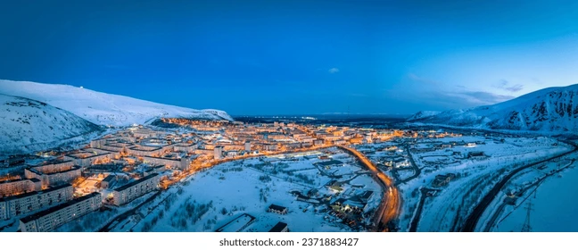

Geografia
Ciudad Porrima se encuentra rodeada de montañas nevadas, extensos bosques de abetos y numerosos lagos. Su paisaje se caracteriza por sus amplios valles, senderos naturales y sus hermoasas vistas de los alrededores durante todo el año.
Un lugar donde la naturaleza y la tranquilidad se encuentran

Ciudad Porrima es una ciudad montañosa conocida por sus paisajes nevados,bosques de abetos,lagos congelados y su ambiente acogedor.
Ciudad Porrima fue fundada durante el siglo XIX por un grupo de familias que buscaban un lugar donde establecerse y comenzar una nueva vida. Al llegar a una region rodeada de imponentes montañas nevadas,bosques de abetos y lagos, encontraron un entorno natural que ofrecia diversos recursos para desarrollar su comunidad.
Aquellas primeras familias formaron un pequeño asentamiento entre las montañas,construyeron las primeras viviendas y aprovecharon los recursos naturales de la region. Con el paso de los años, el asentamiento fue creciendo gracias al comercio,la construccion de caminos y la llegada de nuevos habitantes, hasta convertirse en una ciudad próspera.
Con el tiempo, sus paisajes nevados,sus tradiciones y su arquitectura caracteristica comenzaron a atraer visitantes de distintas regiones. Actualmente, Ciudad Porrima es reconocida por sus atractivos naturales, sus festividades y su calida hospitalidad. A pesar de su crecimiento, conserva las costumbres y el encanto que forma parte de su identidad.
Ciudad Porrima se encuentra rodeada de montañas nevadas, extensos bosques de abetos y numerosos lagos. Su paisaje se caracteriza por sus amplios valles, senderos naturales y sus hermoasas vistas de los alrededores durante todo el año.
Su clima es frio durante la mayor parte del año, con inviernos largos y abundantes nevadas, con temperaturas que pueden descender por debajo de los cero grados. Sin embargo, durante el deshielo de Porrima las temperaturas aumentan ya que es la llegada del verano,en el cual las temperaturas son suaves y agradables, lo que permite disfrutar de actividades al aire libre.
La arquitectura de Ciudad Porrima conserva un estilo tradicional, con edificios de piedra y madera, techos inclinados preparados para las nevadas y calles empedradas. Sus cafeterias, casas de te y pequeñas tiendas crean un ambiente calido y acogedor para residentes y visitantes.
Ciudad Porrima cuenta con diferentes barrios, cada uno con una identidad y caracteristicas propias que forman parte de la ciudad.
La cultura de Ciudad Porrima esta profundamente ligada a su clima frio, sus paisajes nevados y la observacion del cielo nocturno. A lo largo de los años, sus habitantes han desarrollado costumbres y celebraciones que forman parte de su identidad.
El invierno ocupa un lugar especial en la vida de sus habitantes, quienes acostumbran reunirse en cafeterias, compartir bebidas calientes y preparar comidas tradicionales.
La observacion de las estrellas es una tradicion muy arraigada. Muchas familias participan en actividades astronimicas y visitas al Observacion Boreal.
Durante algunas festividades, las calles se iluminan con faroles decorativos que representan la union y la calidez de la comunidad.
la llegada del verano se celebra con ferias, musica, comidas tipicas y actividades al aire libre.
La comida local se caracteriza por sus sopas, guisos, panes caseros, dulces de frutos del bosque e infusiones calientes.
La fauna de Ciudad Porrima está adaptada milagrosamente a las bajas temperaturas y a los largos inviernos. Las especies que habitan la región no solo forman parte del ecosistema local, sino que son consideradas guardianes naturales de la paz de estos paisajes.Por ejemplo;El zorro plateado austral,el búho nival de las cumbres y la fauna menor.